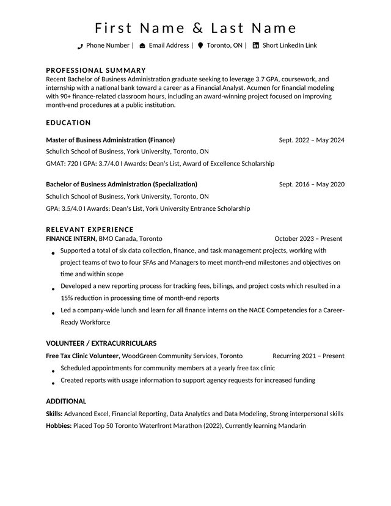
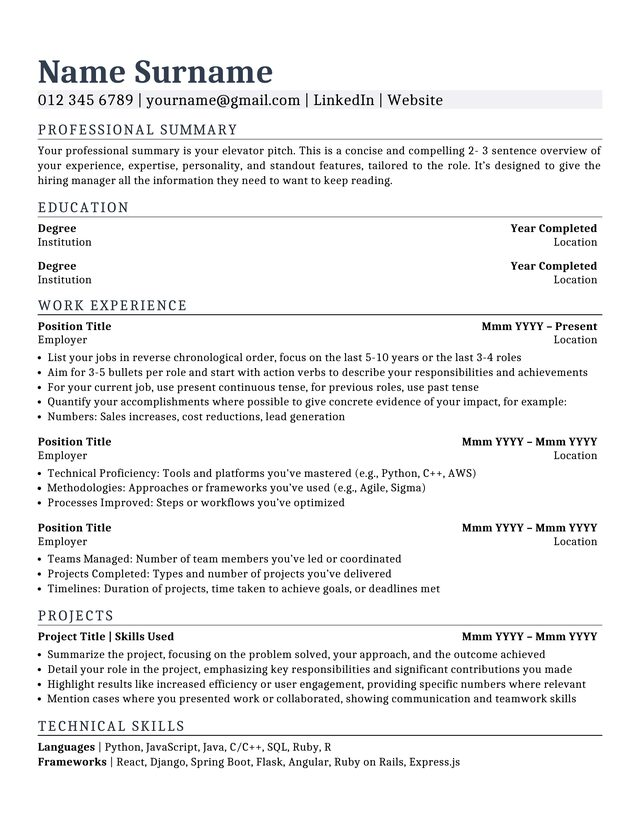
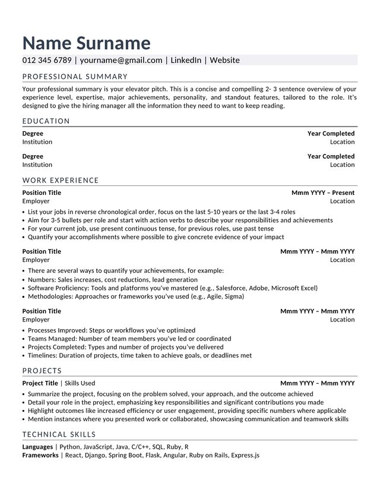
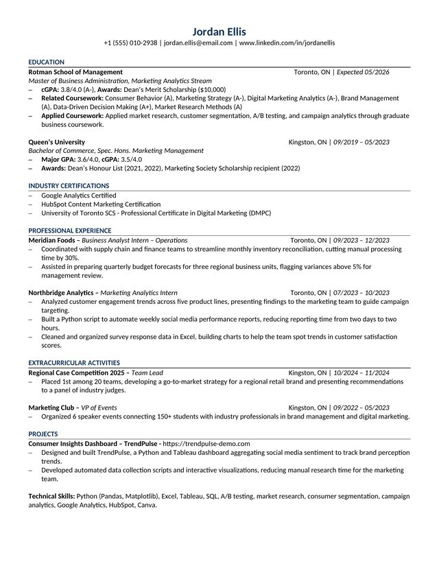

Template 1
Balanced education and experience layout.
DownloadSprint · Session 1
Create one verified source of truth, build a polished base resume, tailor it honestly for a real role, and start a project worth showing.
Start with facts, not polished sentences. Gather the details the AI needs so it never has to guess.
Capture everything once in a structured source-of-truth file. Future resumes should draw facts from this profile, not from memory.
Attach your completed worksheet and the example Markdown file to an AI assistant that accepts attachments. Then use this prompt.
Choose one editable Word template. The Master Profile supplies the facts; the template supplies the order and format.

Balanced education and experience layout.
Download
Compact layout for focused experience.
Download
Skills-forward professional layout.
Download
Detailed education and experience layout.
DownloadAttach your Master Profile and the Word template you selected.
Match the employer's language where it is truthful. Never add a keyword that claims experience you do not have.
Attach your Master Profile and base resume, then paste the complete job posting below this prompt.
Scope something small enough to finish in about two weeks and concrete enough to show a recruiter.
Fill in the fields above. Your brief saves automatically in this browser.
Before you close your laptop, confirm that the base resume, tailored resume, Master Profile, and project brief are saved somewhere you can find again.